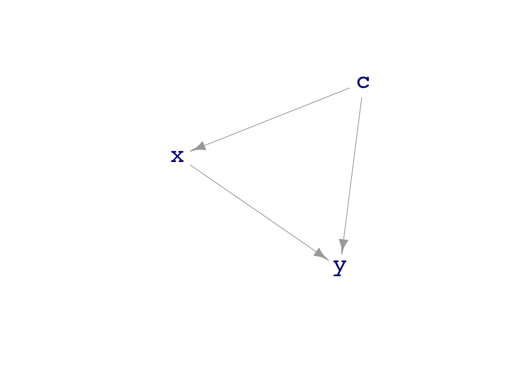

30.2 Choose whether to include covariate depending on form of DAG
Reading
TBD
Lesson
Earlier we described two different types of statistical task:
Prediction. Say something about what the outcome will be for a new case.
Relationship. Describe how two or more variables are inter-related.
In a prediction task, we use training data to build a model based on data from the system of interest. The model is then used as a function to calculate the output (and its precision). The goal is to minimize out-of-sample prediction error. Including covariates in the model can sometimes improve the precision, but sometimes not.
In a relationship task, we also use training data to build a model. But rather than looking at the output from the model directly, we look at the partial derivative of the model function with respect to an input of interest. This quantifies the strength of the relationship between selected input variable and the response variable.
Since we’re using first order polynomial models (e.g. y ~ a + b + c), there is no technical difficulty finding the partial derivative. It is simply the model coefficient on the variable of interest.
In today’s lesson, we’re going to use gaming so that we know exactly what the causal connections are. Remember, it’s just a game! Our objective in playing the game is to learn in what circumstances we can capture the true causal mechanism behind the data.
Example: Sorting out multiple causes
dag02 simulates a situation where two variables are connected causally to y. Questions: Can a fitted model capture the true relationships? Must we use both variables?
dag02
[[1]]
x ~ eps()
[[2]]
a ~ eps()
[[3]]
y ~ 3 * x - 1.5 * a + 5 + eps()
attr(,"class")
[1] "list" "dagsystem"
Sample <-sample(dag02, size=500)lm(y ~ x, data = Sample) %>%coefficients()
(Intercept) x
5.011806 3.060108
lm(y ~ a, data = Sample) %>%coefficients()
(Intercept) a
5.143294 -1.582866
lm(y ~ a + x, data = Sample) %>%coefficients()
(Intercept) a x
4.978814 -1.479246 2.997760
Conclusion: Ignoring one of the explanatory variables prevents us (of course!) from seeing that variable’s relationship with y. But the other variable’s connection shows up correctly. Using both explanatory variables let’s us capture the correct mechanism behind y.
But things aren’t always as simple as in the previous example. Consider dag08:
dag_draw(dag08)

Here both c and x have a causal relationship with y. They often happen to have a causal relationship with each other. Will this interfere with finding the direct relationships between x and y and between c and y?
dag08
[[1]]
c ~ eps()
[[2]]
x ~ c + eps()
[[3]]
y ~ x + c + 3 + eps()
attr(,"class")
[1] "list" "dagsystem"
Sample <-sample(dag08, size=500)lm(y ~ x, data = Sample) %>%coefficients()
(Intercept) x
2.949643 1.590195
lm(y ~ c, data = Sample) %>%coefficients()
(Intercept) c
2.94674 2.20130
lm(y ~ c + x, data = Sample) %>%coefficients()
(Intercept) c x
2.958449 1.147306 1.002920
Here we need to include both c and x in the model to see the correct causal relationships. If we leave out either x or c the other variable will “inherit” some of the causal connection between the left-out variable and the response.
This is called confounding. The dictionary has two different definitions of “confound”:
To surprise or confuse someone.
To mix up (something) with something else so that the individual elements become difficult to distinguish.
It’s the second definition that is relevant to us.
As an example of the “mixing up,” look at the coefficients for the model y ~ c. The DAG shows c having an effect size of 1 directly on y. But c also has an effect on y that is mediated by x. If we leave x out of the model, that indirect effect is mixed in with the direct effect.
The mixing of the direct and indirect causal routes from c to y is actually correctly captured by the coefficient 2 from the model. It’s important to be aware of this mixing. If you weren’t, you might be confused (confounded in the first definition!) because the results from y ~ c and y ~ c + x appear to conflict with one another.
Learning Checks
30.1
Dags with longer confounding pathways. Is there mixing when leaving out an element in the pathway. Mix up the directions of the arrows and show that the mixing occurs when the covariate is included in the model.